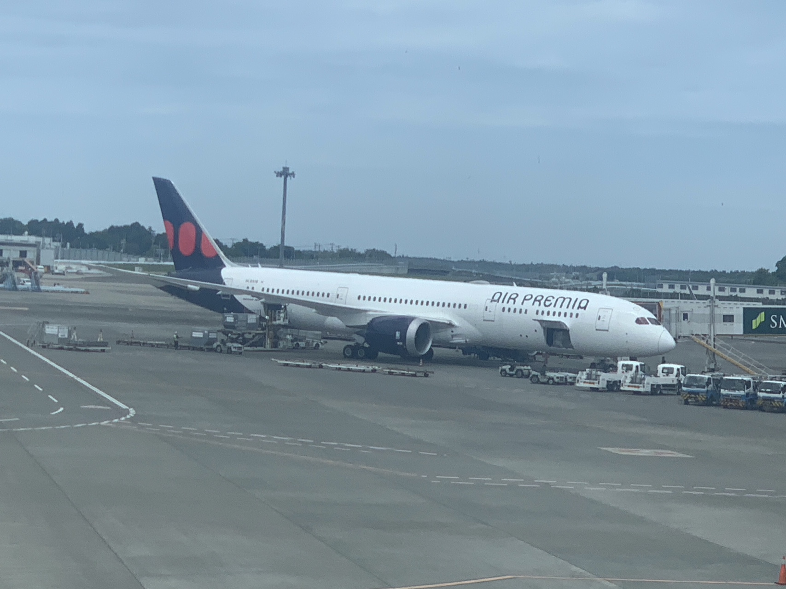
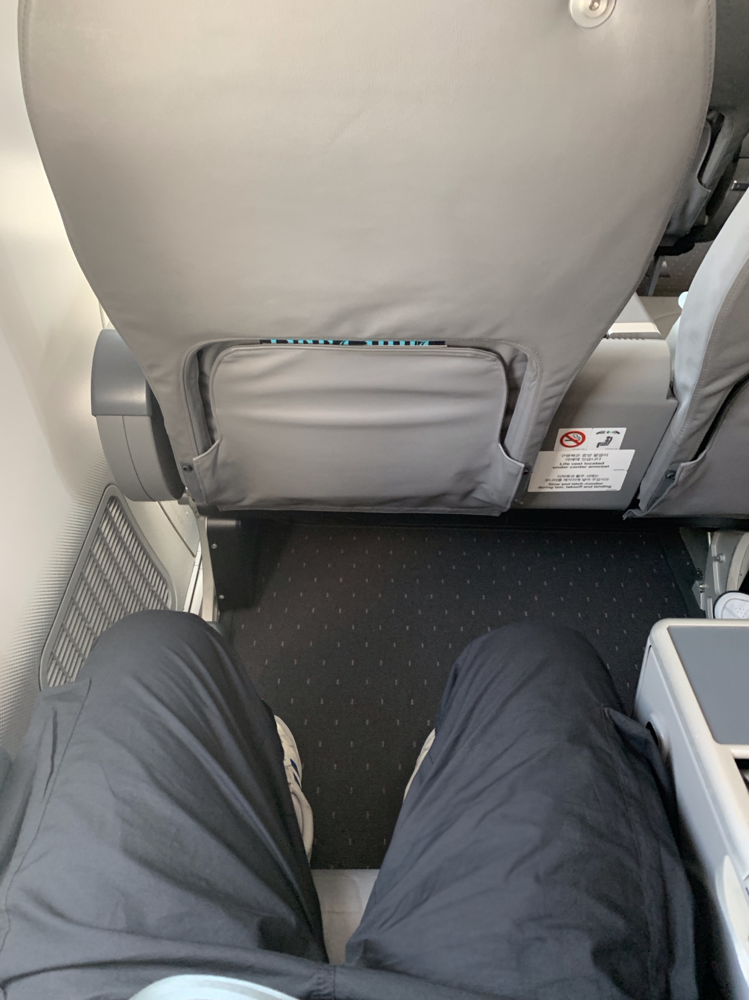
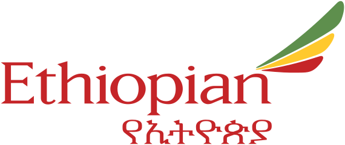
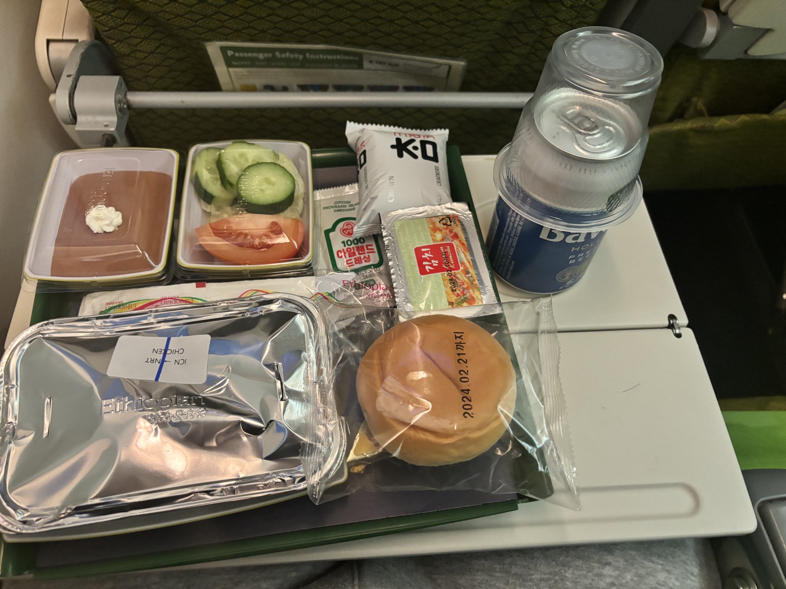
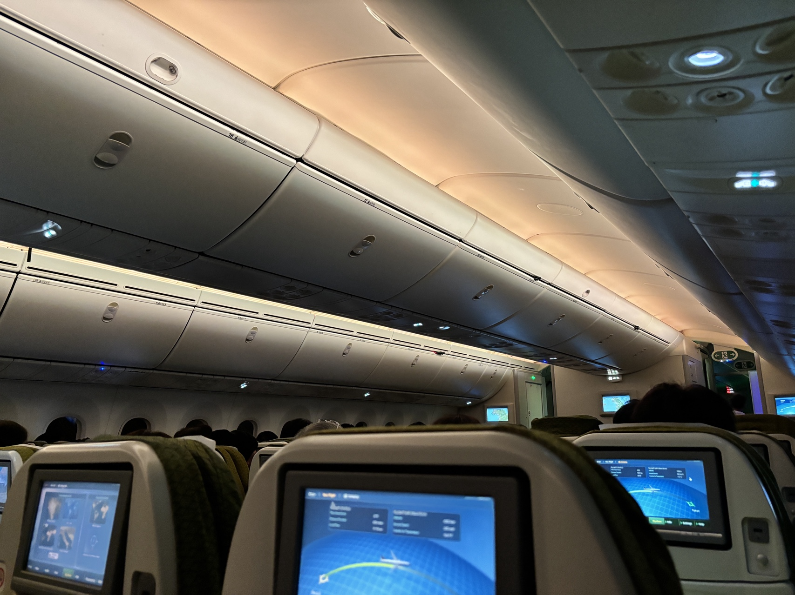

에어프레미아
대한민국의 저비용항공사(Low-cost Carrier, LCC) 중 하나로 저비용항공사인 것을 감안했을 때 신형 항공기, 넓은 이코노미 좌석, 양질의 서비스 등의 차별성을 가진 항공사다.
특히 일반 이코노미의 좌석이 다른 항공사와 비교했을 때 상당히 넓은 편으로 일본운항시에도 간단한 간식거리가 제공된다.
에어프레미아에는 프리미엄 이코노미(Premia 42) 클래스 좌석이 존재하는데 일반 항공사 이코노미와 비즈니스 좌석의 사이 정도 포지션이라 생각하면 편하다.



에티오피아항공
24년 1월, 일본여행 계획 중 우연히 알게되어 이용한 항공사.
믿음이 가지 않을 수 있지만 성수기 시즌에도 매우 저렴한 가격, 그럼에도 기내식을 제공하고 연착은 경험상 복귀 비행기 1시간이 전부였다.
가격대비 매우 만족스러운 경험이었으며 좌석크기 또한 준수한 수준이다.
기내식을 제공하는 것이 큰 매리트로 작용할 것 같다.

